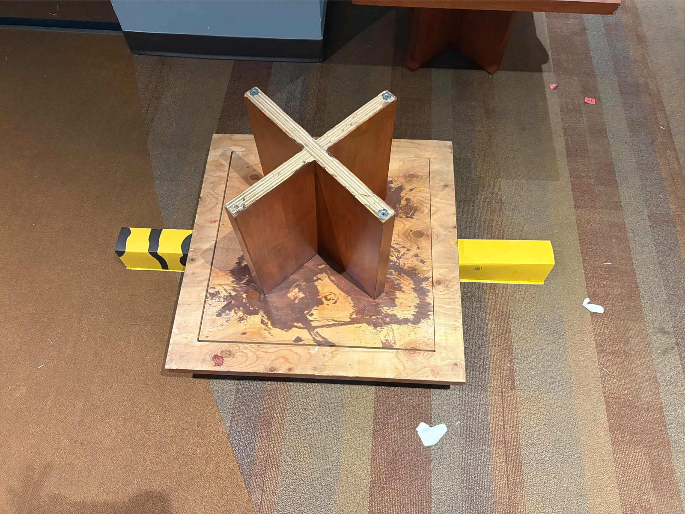

01

CIV102 · Team design and build
Bridge design and analysis
The team analyzed a provided base design, built Python tooling to iterate geometry, checked the selected design manually, planned fabrication, assembled the bridge, and prepared it for load testing.
- Structural calculation outputs
- Fabrication and assembly record
- Load-test setup and failure analysis